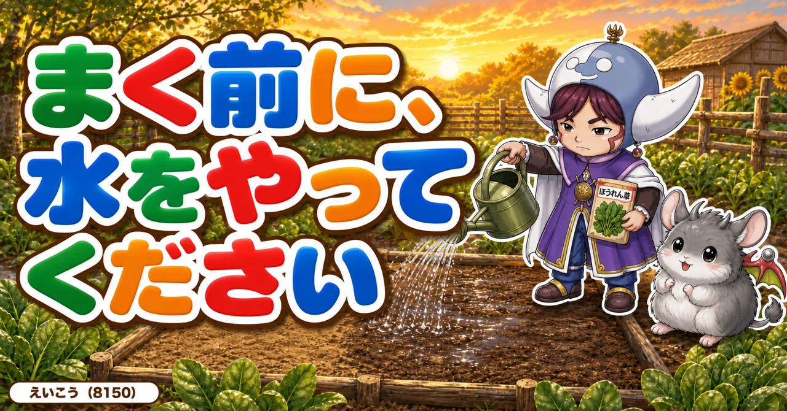
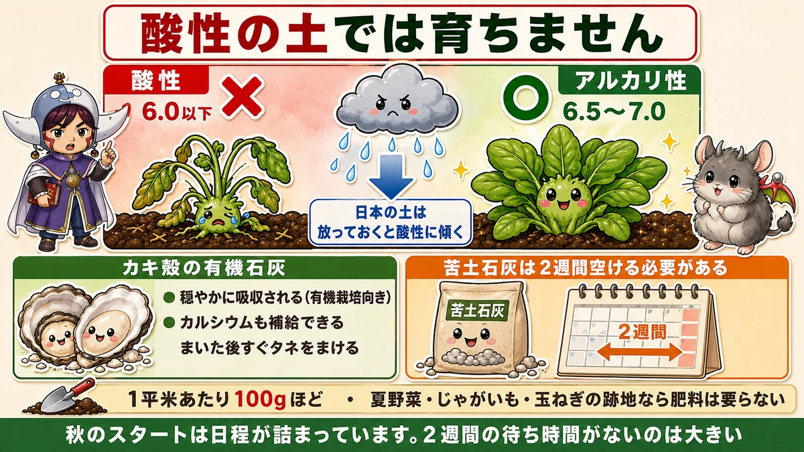
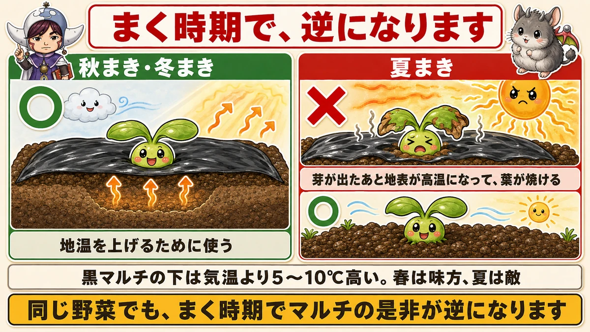
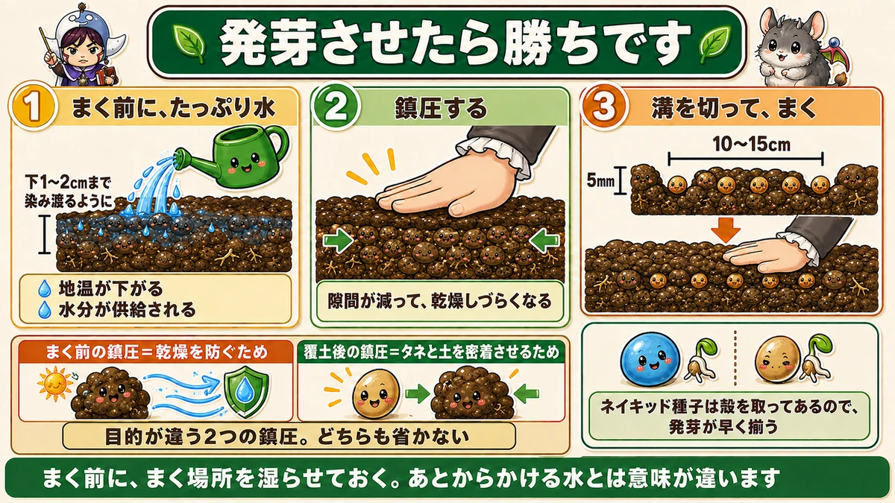
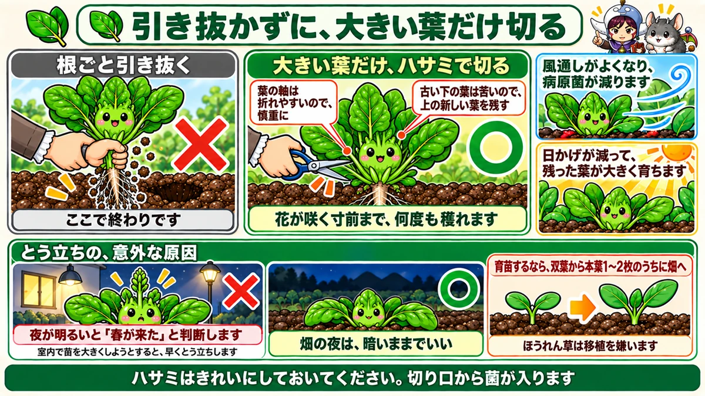
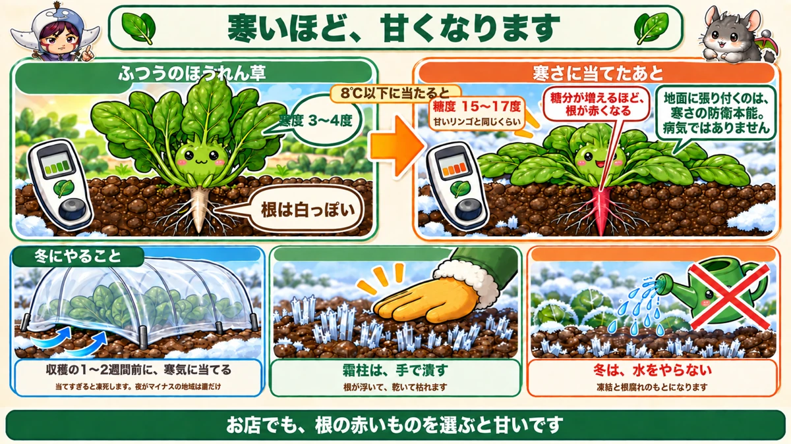
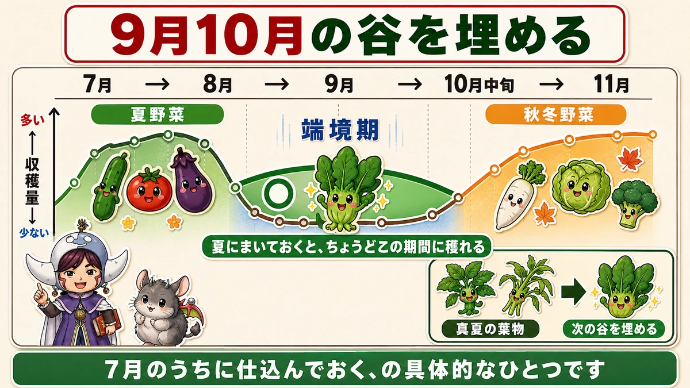

ほうれん草の育て方｜種まき・黄ばみ診断・冬の収穫を整理

どうも、8150（えいこう）です🌱 家庭菜園歴8年、理科の教員免許を持っていて、有機・無農薬で野菜を育てています。
📖 この記事の目次
この記事で分かること
- 種を選ぶときは、まく季節と『冬どり』『晩抽』などの表示を先に合わせます。
- 発芽の準備は、土を湿らせること、浅すぎ・深すぎを避けること、種と土を押さえて接触させることが中心です。
- 黄色い葉を見つけたら、株全体か、外側だけかを確認。酸度、肥料、水はけを分けて調べます。
- 夏は熱を逃がし、冬は熱を保ちます。同じ野菜でも、覆い方と水の扱いを季節で変えます。
- 冬の収穫には『大きな株から順に切る』『外葉だけを摘む』という選択肢があります。
- 追肥や石灰の説明が違っても、土の状態と栽培時期をそろえると、採り入れる方法を選びやすくなります。
ほうれん草が小さいと、「肥料が足りんのかな」と考えたくなりますよね。でも、そこで肥料を足す前に見たいものがあります。土が酸っぱすぎないか、根が水に浸かっていないか、そもそも寒くてゆっくり育つ時期ではないか。この順にほどいていくと、余計なお世話を減らせます。
この記事は、作業の予定を立てるときにも、葉の様子に迷ったときにも使えるように整理しています。最初から読むなら早見へ。畑で気になる症状があるなら診断の章へ進んでください。数字を全部覚えなくても大丈夫。みなさんの種袋と、目の前の株を見ながら確認していきましょう☺️
早見：ほうれん草の育て方（ひと目で分かる数字）
計画に使う数字と、決めつけない数字
- まく季節：秋から冬を中心に考えます。夏まきもできますが、高温への対策が必要です。全国共通の開始日にはせず、種袋の地域別カレンダーで日程を決めてください。
- 日本ほうれん草系のまき時：秋に育てる計画では10月下旬までという説明があります。春になると花芽が上がりやすいため、冬に収穫する日程から逆算します。
- 冬まきの品種表示：『冬どり』『寒締め』『耐寒性』を確認します。2月にまく場合は、『早春出し』など、その作型に合う表示を探します。
- 土の酸度：目標はpH6.0〜7.0、なかでも6.5〜7.0を勧める説明が多くあります。6.2以上なら栽培できるという説明もあり、境界の値は一致していません。
- 発芽しやすい温度：10〜20℃、または15〜20℃という説明があります。25℃以上を避ける説明と、30℃以上で発芽・生育が悪くなる説明を分けて読みます。
- 発芽まで：4〜8日が目安。ただし、寒さ、乾き、種の加工によって前後します。日にちだけで失敗と判断しません。
- 土を耕す深さ：約20cmという目安があります。浅いところに硬い層があるなら、根が進めるか、水が抜けるかを先に確認します。
- うねの高さ：約10cmを例とする説明があります。水のたまりやすさに合わせて調整し、表面にくぼみを残さないようにします。
- うね幅：材料に一律の数字はありません。予定する列数と、手が届いて収穫できる幅から決めます。
- すじまきの列間：10〜20cm（説明によって違う）。10〜15cm、15cm、15〜20cmという例があります。粒どうしの間隔は1〜2cmです。
- 種を置く深さ：5mm〜2cmと幅があります。かける土は約1cmを目安とする説明が多いですが、溝の深さと覆土の厚さは混同せず、袋の指示に合わせます。
- 穴あきマルチでのまき方：穴の間隔15cm、1穴4粒という例があります。冬は5〜6粒に増やし、密に育てる方法もあります。
- 最終的な株間：材料から共通の数値は決められません。列間15cmを、そのまま株間15cmに置き換えないでください。
- 元肥の時期：土づくりの段階で準備する方法と、前作の残った肥料を使って追加しない方法があります。冬に入ってからまく作型では、元肥なしという説明もあります。
- 追肥の時期：定期的に続ける方法と、状態を見て控える方法に分かれます。『何日おき』という共通の日程は、この材料では決められません。
- 秋の間引き：本葉2〜4枚が区切り。種袋で本葉2〜3枚とする例に対して、本葉5枚以上まで待って食用にする方法もあります。
- 収穫まで：約60日、または2か月弱という目安です。厳寒期のゆっくりした生育に、そのまま当てはめないようにします。
- 収穫サイズ：草丈20〜30cmが通常の目安。冬の終わりには10〜15cmや、もっと小さい葉を収穫する選択もあります。
- 寒締めの期間：収穫前の1〜2週間（説明によって違う）。『1週間』『2週間』の両方があり、期間だけでなく冷え込みも見て調整します。
- 連作の間隔：ほうれん草に固有の年数は材料にありません。『必ず何年』とは書かず、前後の野菜と病気の履歴を確認します。
早見を、そのまま作業表にしないために
同じ『冬のほうれん草』でも、秋にまいて大きくしてから冬を迎える場合と、冬に種をまく場合があります。前者はすでに根と葉が育っています。後者は、冷たい土の中で発芽から始めます。必要な保温と、収穫までの時間が違うんですよね。
数字を使うときは、『品種』『種をまく日』『育てる場所』『目指す収穫サイズ』をセットで残します。たとえば、冬の小さな株に秋の60日という数字だけを当てると、「予定を過ぎたのに育たない」と焦りやすくなります。生育の速さを変えるのは、カレンダーよりも実際の温度です。
- 種袋の地域区分と、予定のまき時が合っている
- 列間と株間を別の項目として確認した
- 元肥を入れた日と、前作の施肥の有無を残した
- 収穫予定日は仮置きにして、葉の大きさで見直す
未確認の数字を埋めるためだけに、別の野菜の基準を持って来る必要はありません。分からない欄は種袋で確認する。それも、ちゃんとした栽培計画です。
作業の手順（時期の順）
1．収穫したい季節を決め、種袋を読む
- 『秋に食べる』『冬の畑に残す』『冬にまいて春先に食べる』のどれを目指すか決めます。
- 種袋の裏面で、地域別のまき時を調べます。
- 冬なら寒さへの強さ、春に近いなら花芽の上がりにくさを確認します。
- 病気が気になる場所では、べと病への抵抗性が書かれているかも見ます。
- 種に加工がしてあるか、浸水してよいかを確認してから、まく準備に進みます。
葉の形や名前だけで決めると、季節が合わない種を選んでしまうことがあります。冬用を探しているのに、通販の候補には夏用も混ざっている。なんか、名前が似ていると全部同じに見えちゃうんですよね。表の写真だけでなく、裏のカレンダーまで見るのが確実です。
『晩抽』は、花を咲かせる茎が上がるのが遅い性質を示す言葉です。春に収穫したいときの確認項目になります。ただ、晩抽だからどこで育てても花が咲かないわけではありません。夜まで明るい場所は、あとで説明するとう立ちの原因になります。
日本ほうれん草系は葉に切れ込みが多く、おひたし向きの甘さが特徴とされます。西洋種は丸みや厚みのある葉で、炒め物に向くという整理です。実際には交配した品種も多いので、形だけで性質を決めず、まく時期と料理の好みの両方で選びます。
2．土の酸度と、水の逃げ道を調べる
- 前に何を育てたか、石灰や肥料を入れたことがあるかを確認します。
- 土が少し湿った状態で、場所を変えて酸度を測ります。
- 測る深さをそろえ、表面だけでなく根が使う土の状態も調べます。
- 雨のあとに水が残る場所や、浅い硬い層がないか確認します。
- 必要な酸度調整と、水はけの改善を分けて計画します。

ほうれん草で先に見たいのは、『酸度』『水はけ』『肥料の残り方』の3つです。一つだけ整えても、残りの問題が消えるわけではありません。pHの数値がよくても、根がずっと水の中なら育ちにくいですし、土が乾きすぎていれば種が水を吸えません。
酸度は、どこに差し込むかで違って見えることがあります。浅い場所で測った数字と、深い場所の数字を無条件に比べると、改善したのか測り方が変わったのか分からなくなります。測定器の説明に沿い、同じ条件で記録するところから始めてください。
スギナが多い場所は酸性の可能性を考えるきっかけになります。ただし、草を見ただけで投入量まで決めません。草は手がかり、測定は確かめる作業。この役割を分けておくと、石灰の足しすぎを防ぎやすくなります。
3．うねを整え、必要な分だけ土づくりをする
- 約20cmの深さを目安に土を確認し、根の進みを妨げる硬い層をほぐします。
- 水がたまりやすい場所では、約10cmの高さを例にうねを作ります。
- 表面は平らか中央が少し高い形にし、雨水のたまるくぼみをなくします。
- 酸度が目標から外れる場合だけ、資材の表示に従って調整します。
- 前作で入れた肥料を確認し、追加する場合も一度に多く入れないようにします。
土を細かくほぐすのと、種をまいたあとに表面を押さえるのは、矛盾しません。根が伸びる土はほぐす。種の周囲は接触させる。土全体をカチカチに踏み固める作業と、まいた場所を手のひらで押さえる作業は分けて考えます。
酸度を整える資材には、カキ殻石灰などの有機石灰と苦土石灰があります。カキ殻石灰は穏やかに働き、散布後すぐに種をまく方法で使われます。一方で、効き方がゆっくりなので短期栽培には向かないという説明もあります。どちらを使うかは、商品名だけでなく、今の酸度と準備に使える日数で考えてください。
苦土石灰を使う段取りでは、約1か月前に入れ、その2週間後に肥料を入れる例があります。『石灰を入れてから肥料まで間隔を取る』という予定です。袋ごとに注意事項があるので、急いでいるからと全部同時に混ぜる方法にはしません。
元肥を入れる例には、牛ふん2Lと油かす100〜200ccという組み合わせがあります。ただし、この要約だけでは施す面積が確定しません。この数字をそのまま1㎡分と決めて使わないでください。実際の量は使う商品の表示と、土の状態を合わせて決めます。
冬まきや、夏野菜のあとを使う方法では、元肥を加えずに始める考え方もあります。前作の肥料を利用できる場所へ、毎回同じセットを追加する必要はありません。土づくりは『袋を全部使う作業』ではなく、足りない条件を整える作業です。
4．季節に合わせて、地表の覆いを選ぶ
- 夏の高温期は、黒いマルチで地表をさらに暖める方法を避けます。
- 冬は穴あきマルチなどを使う方法を検討し、まく前から地温を保つ準備をします。
- 冬に事前の保温をする方法では、約1週間前にマルチを張ります。
- 発芽を守る覆いと、発芽後に使う覆いを分けて用意します。

夏と冬の違いは、『どれだけ世話をするか』よりも『熱を逃がすか、保つか』にあります。夏の黒マルチは、芽が出たあとに葉を傷める高温につながります。冬は逆に、冷たい土のまま種をまくより、先に保温しておく工夫が役立ちます。
夏の発芽後には寒冷紗を張って日差しを和らげる方法があります。種まき直後に地表へかける不織布と同じ使い方にせず、育ってきた葉の周囲に空間を作る段取りです。芽が出たから暑さの問題が終わるわけではない、という点も忘れずに。
5．土を湿らせ、種を均一な深さにまく
- 夏の乾いた土では、先に水を入れ、地表から1〜2cmほど下まで湿っているか確かめます。
- 表面が極端にふかふかなら、軽く押さえてまき床を落ち着かせます。
- すじまきなら列間を決め、深さがばらばらにならないよう溝を作ります。
- 粒を置いて土をかけ、手のひらでまいた場所を押さえます。
- 水が必要なら細かい水流で与え、種を動かさないようにします。
- 不織布を使う場合は、風でめくれないよう留めます。

溝の深さには5mmから1〜2cmまで説明の幅があります。かける土の厚さは約1cmという例が多いです。ここで避けたいのは、深い溝にまいたあと、さらに厚く土を足してしまうこと。溝と覆土を足し算した結果、予定より深い位置へ種を閉じ込めないようにします。
深さをそろえる工夫として、割り箸の先から1cmのところに印を付ける方法があります。目分量で場所ごとに変えるより、基準を一つ作る方が扱いやすいですね。どの深さにする場合でも、袋のまき方と照らし合わせて使ってください。
覆土後に押さえるのは、土の水分が種へ渡る接点を増やすためです。強い水流で土を押し流す代わりに、手で接触させます。ホースを使うなら、出し始めと止める場所をうねの外にすると、勢いの変わる水を種へ直接当てずに済みます。
浅まきで種が動きそうなら、先に不織布を留め、その上から水を通す方法もあります。『水をかけてから覆う』と『覆ってから水をかける』の違いは、種が流れるかどうかに合わせて選びます。
冬は午前中に作業を終える計画が向いています。夕方に水を入れてすぐ冷え込むより、日中の時間を使えるためです。まいた日、品種、まき方を記録し、芽が見えた日も追加しておくと、次の季節に比較しやすくなります。
6．発芽を待つ間は、乾きと温度を確認する
- まいてから4〜8日を目安に、発芽の様子を観察します。
- 表面だけを見ず、種のある深さで土の湿りを確かめます。
- 高温期は、覆いで熱をこもらせていないか調べます。
- 冬は、覆いがめくれていないか、霜柱で土が持ち上がっていないかを確認します。
- 芽が出ない場所がある場合は、すぐに肥料を足さず、深さ、水分、温度から見直します。
種の外側が水を通しにくいため、ほうれん草は発芽がそろいにくいことがあります。浸水で対応する方法もありますが、加工済みの種まで同じ扱いにはできません。『全部一晩つければ解決』と決める前に、袋の注意を見てください。
発芽の目安を過ぎても、数日遅れただけで土を全部掘り返す必要はありません。ただ、2週間たっても動きがないなら、深く埋めていないか、種の位置が乾いていないかを確認する段階です。後から大量にまき足す前に、最初の条件を調べます。
7．秋の間引きと、冬の密植を使い分ける
- 秋まきで成長が進む株は、本葉2〜4枚を目安に混み具合を見ます。
- 穴まきなら、5本から3本、2本、1本へと減らす段階的な方法を使えます。
- 食べられる大きさまで待つ方法では、混みすぎて生育が止まらないかを確認します。
- 冬まきで密植する方法を選んだら、大きくなった株から順に収穫します。
- 隣の株と根が近い場合は、抜かずにハサミで切ります。
冬の密植は、冷え込みへの備えと、少しずつ収穫する予定が組になった方法です。大きい株を取り除けば、その場所を隣の株が使えるようになります。1つの穴から3〜4回に分けて収穫する説明もありますが、これは1株が3〜4回育ち直す意味ではありません。
暖かくなって全部の株が速く育つと、同じ混み具合を保ち続ける理由が薄れます。冬だから間引かないと決めた場所でも、気温と葉の重なりを見て収穫を進めます。ズボラでいい場面を見つけるのと、ずっと放置するのとは別なんですよね。
8．葉の色と土を見て、水・肥料を調整する
- 葉が小さいときは、日当たり、気温、食害の有無を確認します。
- 黄色くなったら、外葉だけか株全体かを見分けます。
- 肥料不足が疑われる場合だけ、今まで入れた量と商品の表示を確認して追加を考えます。
- 夏の乾燥が続くときは、1〜2日おきに軽く水を与える例を参考に、土の湿りで判断します。
- 冬は毎日の水やりを予定せず、表面の下が本当に乾いているかを確認します。
冬の土は、上だけ乾いて下は湿っていることがあります。その状態で朝の日課として水を足すと、温度を下げ、凍結や根の傷みにつながります。『今日はまだ水をやってない』より、『種と根の周りに水はあるか』を見てください。
小さい株へ肥料を足しても、日陰や寒さが原因なら解決しません。葉が濃い緑で健全なら、まず生育条件を見直します。窒素をたくさん入れるほどよい、とは考えず、肥料の過剰で根が傷んで欠株になる可能性も一緒に見ておきます。
9．冬の覆いを調節し、霜柱を処理する
- 冷え込みがまだ弱い時期は、不織布と防虫ネットを使う方法から始めます。
- 最高気温15℃以下が続くという目安を参考に、保温ビニールへ切り替えるか検討します。
- 寒さが強い場所では、不織布とビニールを重ねる方法を検討します。
- 晴れた日の覆いの内側も確認し、暖まりすぎていれば調節します。
- 霜柱で根の周囲が浮いたら、手で土を押し戻します。
覆いを厚くするほど、すべてが解決するわけではありません。まだ暖かい時期にビニールを足すと、中が高温になります。『11月だから設置する』と日付で固定せず、日中の最高気温と夜の冷え込みを見ます。
厳寒期の重ね方には、地表に不織布、その上に透明ビニール、さらに不織布とビニールのトンネルという構成があります。これは強い保温をする一例です。最初から全員に4枚必要という意味ではなく、地域と作型で必要な段階を選びます。
霜柱は、小さな株の根を持ち上げる点が問題です。葉を保温していても、根と土の接触が切れれば乾いてしまいます。マルチのある場所では上から確認し、浮いている土を落ち着かせます。押さえるときは葉や株元を傷めないようにしてください。
10．収穫方法を選び、寒締めは一部から始める
- 草丈20〜30cmを目安に、料理に使える株から収穫します。
- 冬の終わりに10〜15cm程度なら、大型化を待つより小さく収穫する方法を選べます。
- 株ごと穫る場合は、密植している隣の株を動かさないよう切り取ります。
- 葉を繰り返し穫る場合は、外側の大きな葉を切り、中心の新しい葉を残します。
- 寒締めを試す場合は、収穫前1〜2週間を目安に、一部の覆いから調節します。
- 花芽が上がり始めたら収穫を進め、次の野菜の準備へつなげます。

『株ごと収穫する』『同じ株の葉を摘む』は、別の方法です。後者では根と中心を残すので、次に育つ葉を待てます。葉柄は折れやすいので、切る葉を分けてからハサミを入れ、道具は清潔にしておきます。長く穫れる方法でも、花が咲くまで無期限に続くわけではありません。
寒締めは、成長を優先していた株を冷気に当て、甘さを楽しむ収穫前の管理です。氷点下の夜がある場所では、覆いを全部取るより裾だけを開ける方法があります。収量を確保する区画と、寒締めを試す区画を分けると、全部を一度に傷めるリスクを減らせます。
2月中旬ごろまで寒締めを行い、3月前半に収穫を終える計画もあります。地域が違えば日程も変わるので、日付を優先して未熟な株を強く冷やさず、食べられる大きさと気温を合わせて判断してください。
11．片づけた土の酸度を確認し、次の野菜を決める
- 収穫後に、残った根や病気の株を片づけます。
- 栽培前に酸度調整した場所では、次の野菜を入れる前にもう一度測ります。
- 前後の野菜の仲間と、育てる季節を照らし合わせます。
- じゃがいもを予定する場合は、中性寄りに整えた土が次の作物に合うか確認します。
後作の候補には、アブラナ科の野菜、豆類、玉ねぎ、にんにくなどがあります。候補に入ることと、今日すぐ植えられることは別です。時期と土の状態を確認してから選びます。
前作の候補にも、スイカ、きゅうり、枝豆、白菜、大根など多くの野菜が挙げられます。前作名だけで土づくりを省略せず、何をどれだけ入れた場所なのかを見てください。次へ渡すために残したいのは、『前作の名前』『施した資材』『最後に測った酸度』の記録です。
失敗の見分け方（症状→原因→やること）
まいたのに、芽がほとんど見えない
- 症状：目安の日数を過ぎても芽が見えず、列が空いたままです。
- 考えられる原因：種の位置の乾燥、覆土後の押さえ不足、埋めた位置が深すぎること、高温や低温、種の加工に合わない扱いです。
- やること：種をまいた日と気温を確認し、一部の土で湿りと深さを調べます。肥料の追加より先に、発芽の条件を見直してください。
全部の列で出ないなら、共通した準備の問題を疑います。一部だけ出ないなら、その場所の乾き、深さ、水のたまり方を比べます。芽が出た場所があるときは、そこが比較の相手になります。種をまき直す前に違いを見つけると、同じ失敗を繰り返しにくいです。
芽は出たのに、暑い日に消えていく
- 症状：発芽した小さな葉が、暑さの続く時期に傷んでなくなります。
- 考えられる原因：高い地温、黒マルチ周辺の熱、発芽後も続く高温、乾燥です。
- やること：地表の覆いと日差しを確認し、熱を逃がす方法へ切り替えます。夏まきそのものを延期する選択も含めて考えます。
ほうれん草は、発芽できれば真夏もそのまま育つ野菜ではありません。夏用の品種でも30℃以上が続けば難しさが増します。水を増やすだけで対処しようとせず、日差しを和らげられるか、少し涼しくなるまで待てるかを考えてください。
株全体の緑が薄く、黄色っぽい
- 症状：外側だけでなく、株の広い範囲が黄化しています。
- 考えられる原因：酸性に傾いた土が一つの候補です。石灰の入れすぎによる微量要素の不足や、根の傷みも切り分ける必要があります。
- やること：根が使う深さで酸度を測り、水はけと投入した資材を確認します。黄化だけを根拠に石灰や肥料を重ねないようにします。
材料では、全体の黄化を酸性障害の手がかりにする説明があります。ただし、黄色いから必ず酸性とは決めません。すでに石灰を多く入れた場所なら、逆の問題も考える必要があります。病気の斑点なのか、葉全体の色が変わっているのかも見分けてください。
酸性障害が進んだ株は立て直しが難しいとされます。測定で問題を確認できたら、傷んだ株を片づけ、土を調整して次にまく準備をする方法があります。毎日何かを足して様子を見るより、原因を確かめたうえで仕切り直す方が進めやすい場合もあります。
一番外側の葉から黄色くなっている
- 症状：中心の葉は緑なのに、外周の葉の色が薄くなります。
- 考えられる原因：肥料不足が候補になります。古い葉の傷みや、株全体へ広がる途中の異常とも区別します。
- やること：元肥と前作の施肥を確認し、日当たり、水はけ、酸度も見ます。不足を確かめてから追肥を判断します。
外葉の黄化と株全体の黄化を分けると、最初に確かめる項目を選べます。ですが、見た目の分類は診断の入口です。黄色い場所だけで確定して、すぐ多量の肥料を入れるところまで進めないようにしてください。足りないのか、根が吸えないのかで対処が変わります。
緑のまま、いつまでも背が低い
- 症状：葉はあるものの、草丈が増えません。
- 考えられる原因：日照不足、低温など適温から外れた状態、根や中心の芽の食害、硬い土の層です。
- やること：日の当たる時間帯、最近の気温、中心の芽、根元を確認します。冬なら健全な小さい葉を収穫する選択も考えます。
ここは「小さい＝空腹」と決めないのがポイントです。冷え込みで成長が遅くなった株へ肥料を増やしても、温度は上がりません。葉色がよく、傷もなく、寒い時期なら、待つか保温するか小さく食べるかを選びます。
株がしおれ、土はずっと湿っている
- 症状：土に水分があるのに葉がしおれたり、株が倒れたりします。
- 考えられる原因：水の滞留による根の傷みや、立枯病が考えられます。肥料が多すぎて根を傷めた可能性も確認します。
- やること：追加の水を止めて土の状態を調べ、排水を確認します。傷んだ株と周辺の株を見比べ、次の種まき前にはうねの形も修正します。
乾燥した株と同じ顔に見えることがあるので、葉だけで水やりを決めないようにします。上はしおれていても、下は水でいっぱい。それなら必要なのは追加の水ではなく、水が逃げる条件です。
冬に葉が横へ広がり、地面に近い
- 症状：葉が立たず、低い位置で広がっています。
- 考えられる原因：寒さに対応するロゼット状の姿です。これだけなら、病気を示すものではありません。
- やること：葉の色、中心の芽、傷みの有無を見ます。大きく育てたいなら保温を検討し、食べたい大きさになっていれば収穫できます。
『立っていないから失敗』と考えなくて大丈夫です。背の高さだけで判定すると、冬の姿を全部不調扱いしてしまいます。葉が広がる形の変化と、組織が枯れる変化を分けて観察しましょう。
冷え込んだあと、葉の一部がチリチリになった
- 症状：葉の縁や一部が傷み、乾いたようになります。
- 考えられる原因：凍害が候補です。根の周囲が浮いていれば、霜柱による乾燥も確認します。
- やること：傷んで戻らない部分を取り、次の冷え込みに備えて覆いを調節します。根元の土が浮いているなら押し戻します。
寒さで甘くする管理と、凍らせて傷める管理は同じではありません。甘さをねらって全部の覆いを取ったあとなら、まず寒気に当てる強さを見直してください。糖度を上げるために葉を枯らす必要はないです。
黄色い斑点があり、葉裏に灰色のものが付く
- 症状：葉の一部に黄色い斑点ができ、裏に灰色のカビのようなものが見えます。
- 考えられる原因：べと病が疑われます。全体の黄化とは別に扱います。
- やること：疑わしい株を取り除き、残った株の葉裏も調べます。枯れ葉を除き、葉の混み具合と風通しを見直します。
色が変わった葉を見つけたら、表だけで終わらず裏へ返してみてください。斑点と裏側の状態がセットになると、酸度や肥料の問題との区別に役立ちます。次に種を選ぶときは、べと病への抵抗性も確認項目に加えます。
冬のトンネル内なのに、葉に穴が増える
- 症状：保温している株に、新しい食べ跡が出ます。
- 考えられる原因：ハムシなどが内側で活動している可能性があります。
- やること：穴の数だけで判断せず、株元や葉を調べて虫を探します。見つけた虫を取り除き、覆いを閉じたあとも新しい被害を確認します。
寒い屋外と、暖かい覆いの中は環境が違います。冬まきは虫の負担を減らせますが、トンネルまで虫がいないと保証する方法ではありません。『冬だから虫はお休み』と決めつけず、食べ跡があれば中を確認してください。
まだ小さいのに、中心から茎が伸びてきた
- 症状：収穫したいサイズに達する前に、中心が上へ伸びてつぼみが付きます。
- 考えられる原因：寒さで生育が進まないまま春を迎えたこと、作型に合わない品種、夜間の照明です。
- やること：健全な葉の収穫を進め、種袋の適期と栽培場所の明るさを確認します。次は冬の保温と夜の環境を合わせて見直します。
部屋で暖めて大きくしようとしても、夜まで照明が当たれば、とう立ちを促す条件になることがあります。暖かさだけを整えると、もう一つの条件が抜けてしまうんですね。街灯の近くでも、暗くなる時間を確認しておきます。
説明が分かれていること
酸度はpH6.0からか、6.5からか
- Aという説明：栽培の目安をpH6.0〜7.0とする説明があります。6.2以上なら作れるという説明もあります。
- Bという説明：pH6.5〜7.0を目標にし、6.5以上を重視する説明があります。
- どう考えればよいか：『栽培できる範囲』と『目指したい範囲』を分けます。測定値、測った深さ、株の状態をそろえ、境界の数字だけで成否を決めません。
『酸性に弱い』を、『アルカリ性へどんどん寄せる』と読み替えないでください。目標は中性に近い条件です。すでに適した酸度なのに、ほうれん草用だからと追加すれば、次の野菜にも影響する可能性があります。
石灰の量と、カキ殻石灰の向き不向き
- Aという説明：1㎡100g、または150〜200gとする量の例があり、カキ殻石灰を使ってすぐまく方法が勧められます。
- Bという説明：畳1枚ほどの面積に50g、多くても100gという例があります。カキ殻のようにゆっくり効くものは、短期間で育てる野菜には向かないという説明もあります。
- どう考えればよいか：面積、資材の種類、現在の酸度、調整のための日数をそろえて比較します。数字を平均して一つの投入量にしません。
動画の量の例には1㎡200ccという体積の表示もあります。gとccは別の単位なので、見た目が近い数字でも同量とは限りません。『200』だけメモして使うと、量がずれてしまいます。
カキ殻石灰を使わずに育つ場所もあります。これは土がすでに適している可能性を示すもので、酸性土でも調整がいらないという意味にはしません。足すかどうかは、『去年も入れたから今年も』より、測定値と履歴で判断します。
種は水につけるか、乾いたまままくか
- Aという説明：普通の種を一晩、または前日から水に浸し、外側を湿らせる方法があります。湿らせた紙で扱う例もあります。
- Bという説明：コーティング種子は浸水を避ける説明があります。濡れた種は扱いにくいため、乾いたまま、湿った土へまく方法も勧められます。
- どう考えればよいか：袋の加工表示と注意事項を先に確認します。浸水の可否が不明なら、勝手に処理を追加せず、土の水分と覆土後の押さえ方を整えます。
『硬いからつける』だけでは、加工済みの種への配慮が抜けます。発芽しやすく処理された種と、未処理の種では準備が違います。浸水の長さを自己流で増やすことも避け、説明にある範囲で扱ってください。
元肥を準備するか、前作の残りを使うか
- Aという説明：堆肥などで土を整え、肥料を入れてから栽培を始める方法があります。
- Bという説明：夏野菜の跡地や厳寒期の種まきでは、元肥を追加せず、そのまままく方法があります。
- どう考えればよいか：新しく整える土と、肥料の残った土を同じ出発点にしません。前作の投入量が分からないときも、土や株の様子を見ずに両方の方法を足し合わせないようにします。
この違いには、準備期間と地温も関係します。厳寒期から始める方法へ、暖かい時期の土づくりをそのまま重ねると、種まきが遅れます。真冬の苦土石灰にも『入れない』『多少入れてよい』の説明があり、酸度を見ずに一律の判断にはできません。
追肥は控えるか、収穫期まで続けるか
- Aという説明：葉色や生育がよければ追加を控え、小さい原因を日照、温度、食害から調べる方法です。急な窒素の吸収と、味への影響を重視します。
- Bという説明：ほうれん草は成長中の葉を収穫するため、収穫が近いという理由だけで肥料を止めない方法です。
- どう考えればよいか：元肥の量と、土に残っている肥料が違えば必要量も変わります。『何回入れるか』を先に決めず、葉色と生育条件で追加の必要性を判断します。
葉が小さくても濃い緑で、寒い日に成長が止まっているなら、保温や日当たりの確認が先です。外葉から色が薄くなり、施肥も少なかったなら、不足の可能性を調べます。全体が黄色い場合は、酸度や根の状態を外さないようにします。
控える方法で使う液肥の例には、油かす液肥500倍、すなわち水1Lに原液約2ccという説明があります。これはその原液に対する希釈の例です。濃度の異なる市販品や別の原料へ置き換えず、実際の商品の表示を優先してください。液体なら何でも同じではありません。
間引きの時期と、冬に残す株数
- Aという説明：秋まきでは本葉2〜4枚ごろから混み合う株を減らします。種袋には本葉2〜3枚という表示例があります。
- Bという説明：本葉5枚以上まで待って食材にする方法や、冬まきでは間引かず収穫で株数を減らす方法があります。
- どう考えればよいか：株が育つ速さと、いつ食べるかをセットにします。冬の遅い生育を利用する方法を、暖かい季節の密植へそのまま移しません。
待つ方法を選んでも、葉が重なり続ける状態や病気を放置しないでください。『間引きを省く』には、『大きい株から穫る』という次の作業が付いています。省略できる手間と、必要な観察を分けると使いやすいです。
寒締めは1週間か、2週間か
- Aという説明：収穫の1週間前から寒気に当てる方法があります。
- Bという説明：2週間ほど行う方法があります。
- どう考えればよいか：1〜2週間という幅で計画し、その間の気温、株の大きさ、葉の傷みを確認します。冷え込みの違う場所で、日数だけそろえても結果は同じになりません。
短くしたら甘くならない、長くすれば必ず甘くなる、と両端へ振り切る必要はありません。最初は一部で試し、健全な葉を確保する方を優先します。氷点下の夜に全部開放することと、穏やかな冷気へ当てることも区別してください。
冬の虫は、気にしなくてよいか
- Aという説明：11〜12月にまく方法では、虫が少なくなり、薬剤を使わず育てやすくなります。
- Bという説明：冬の保温トンネル内でもハムシが増え、穴が開くことがあります。
- どう考えればよいか：まく季節をずらすのは被害を減らす方法です。食害が起きない保証にせず、覆いの中に新しい穴があれば確認します。
季節を味方にする方法は、世話を減らす助けになります。ですが、実際の食べ跡が見えているのに『冬なのでいないはず』を優先すると、目の前の変化を見落とします。知識を使う順番は、現物を見てから、です。
よくある質問
初めてなら、どの季節から始めればよいですか
種袋の地域別の適期に合わせ、秋から冬の作型を候補にしてください。
夏は発芽後も暑さへの対策が必要です。初回から一番暑い時期へ挑むより、涼しい季節に土とまき方を整える方が始めやすいです。
ほうれん草をまけば、土の良し悪しが分かりますか
育ち方は土の状態を知る手がかりになります。健全に伸びる場所と、幼い株が黄化する場所を比べてみてください。
ただし、品種、温度、日当たりも影響します。小さいだけで酸性と決めず、土を測って確かめます。
石灰を入れ忘れたら、今年はあきらめますか
まず酸度を確認してください。すでに適した範囲なら、入れ忘れがそのまま失敗とは限りません。
調整が必要な場合には、散布後すぐまく方法で使われる有機石灰という選択肢があります。使う商品の注意と、調整に必要な時間を確認して進めます。
種袋にネイキッドと書いてあるのは何ですか
水を吸いにくい外側の硬い部分を、あらかじめ取り除いた種です。
土の水分管理を省ける意味ではありません。加工表示と、まく前の扱い方を袋で確認して使ってください。
加工済みの種なら、水につけた方がさらに安心ですか
追加の浸水が向かない種もあるので、加工済みという理由でつけません。
コーティングや発芽を助ける処理の注意を確認し、土へ水を入れる準備と、覆土後に押さえる作業を整えるのが先です。
冬に毎日水をやらなくても、本当に大丈夫ですか
土の中が湿っていれば、毎日の追加は控えます。露地の冬作では、種まき時の水だけで足りるという説明があります。
覆いの下や雨の届き方で乾き方は変わるので、『冬だから絶対に不要』とも決めず、種と根のある深さを確かめてください。
本葉が増えてから間引いてもよいですか
少し大きくして食材にする方法があります。混み合って生育が止まらないかを見ながら進めます。
暖かい時期の株を、冬の密植と同じように放置しないことがポイントです。
冬に1穴から何回も穫れるのは、同じ株が復活するからですか
複数株を残して大きい順に穫る場合は、別の株を順番に収穫しています。
1株の外葉だけを切って次の葉を待つ方法もありますが、仕組みは別です。どちらを使うか決めて、切る位置を選びます。
小さい株に追肥すれば、大きくなりますか
原因が肥料不足なら助けになりますが、寒さ、日陰、食害なら追加だけでは解決しません。
葉色、気温、中心の芽、根の周囲を確認し、『足りない』のか『育てない条件』なのかを分けます。
根元の赤さは、病気ですか
根元の赤いほうれん草は珍しくなく、赤いというだけで病気とはしません。
葉の傷みや腐りがあるかを別に調べます。赤さだけで糖度の数値まで決めることもしないようにします。
葉が地面に広がったら、立つまで待って収穫しますか
冬のロゼット状の株なら、立ち上がるのを待つ必要はありません。
健全で料理に使える葉があれば収穫できます。草丈だけで食べ頃を判断しないでください。
寒締めは小さな苗にもすぐ始められますか
まず食べられる大きさへ育て、収穫前の管理として考えます。
小さい苗を強く冷やして成長を止めることと、育った葉の甘さを引き出すことは分けます。収量を残すなら一部の株から試すと安心です。
室内の明るい場所なら、苗を大きくしてから植えられますか
夜も照明が当たると、とう立ちの原因になることがあります。暖かさだけで場所を選ばないでください。
移植を好まないため、苗から移す方法では双葉から本葉1〜2枚の小さい段階で移す説明があります。基本の計画は直まきを中心に考えます。
冬に小さいままなら、春まで待った方が得ですか
春まで待つと、十分な大きさになる前にとう立ちする可能性があります。
2月に10〜15cmほどでも収穫する方法があり、小さな葉も利用できます。サイズだけでなく花芽の動きと、次の作付けを見て決めます。
ほうれん草のあとに、じゃがいもを植えてよいですか
土の酸度を確認してから判断します。ほうれん草のために中性寄りへ調整した場所が、次のじゃがいもにも同じ条件で合うとは限りません。
片づける直前に慌てて調整するのではなく、後作を考え始めた段階で測っておきます。
学ぶ：ほうれん草のしくみ🔬
発芽は、土から種へ水を渡すところから
普段『種』と呼んでいるほうれん草の粒は、外側を硬い果皮に包まれています。ここが吸水のしにくさにつながります。乾いた場所へ置いて、水を待つだけでは、土が先に乾いてしまうことがあるんですね。
土を先に湿らせると、種のすぐそばに水を用意できます。覆土した場所を押さえると、種と土が触れる部分を増やせます。どちらも発芽の入口を整える作業ですが、『土へ水を入れる』『接点を作る』という別々の役割です。
ふかふかに耕したまき床でも、粒の周囲に隙間が多ければ、水を受け取りにくくなります。見た目が柔らかくてよい土でも、最後に種の場所を落ち着かせる理由はここにあります。反対に、湿りすぎて水がたまる場所も適しません。吸水しやすさと排水を両方確保します。
加工した種は、この外側の条件を変えて発芽を助けます。ネイキッド種子は硬い部分を取り除く方法、ほかにも吸水や発芽ぞろいを助ける処理があります。加工名が違えば扱いも同じとは限らないので、自己流の浸水を上乗せせず、袋の指示で使います。
酸度と肥料は、別の確認項目
pHは、土の酸性・中性・アルカリ性の程度を表す数字です。数値が低い側が酸性、7付近が中性です。ほうれん草は強い酸性に弱いため、肥料の量だけでなく、根が使う土の酸度を整える必要があります。
ここで分けたいのは、『土に養分がある』と『株が養分を利用できる』です。肥料を追加しても、根の環境が適していなければ、それだけで葉の色が戻るとは限りません。小さく黄色い株を見て、肥料の量だけを増やさない理由です。
石灰も、多いほどよい資材ではありません。材料には、過剰になるとマンガンなど微量要素の不足につながり、葉が黄色くなる説明があります。酸性で起きる黄化と、調整しすぎて起きる黄化が似て見えるなら、見た目だけで追加するのは危ないですよね。測る手間には意味があります。
水はけも根の働きに関わります。浅い位置に硬い層があれば、根が伸びにくく、水もたまりやすくなります。表面だけを柔らかくしても、下の条件が残ることがあります。土づくりのときに少し深く見るのは、見えない場所の問題を先に減らすためです。
寒締めは、寒さに対応する変化を利用する

ほうれん草は低温にさらされると、糖の含量を増やすなど、寒さに対応する変化を起こします。寒締めは、食べられる大きさになった株へ低温を与え、この変化を収穫につなげる方法です。小さい苗をただ冷やし続ける方法とは分けてください。
材料では、8℃以下を甘さが増す目安とし、普通の糖度3〜4度に対して15〜17度まで高まる例が紹介されています。ただし、これはどの品種でも同じ温度と日数で達する保証ではありません。数字を達成するために、葉が傷んでも冷やし続ける必要はないです。
気温だけを見れば十分とも限りません。寒締めの研究では、根が低温にさらされることが糖度の上昇に関わるとされています。覆いの中の土がどれだけ冷えるかは、日差しや場所によって変わります。『1週間』と『2週間』という日数の違いを、単純な優劣にしない理由にもなります。
育つ速さと、甘さを引き出す管理には、折り合いを付ける場面があります。強く保温すれば成長を助けやすく、冷気に当てれば生育はゆっくりになります。まず葉を育て、そのあと収穫前の管理を変えると、二つの目的を順番に扱えます。
糖度は数字ですが、家庭菜園の楽しみは測定値だけではありません。収穫した葉を、その日の料理で味わう。それでも十分に変化を楽しめます。食べられる葉を守りながら、少しずつ冷気への当て方を変えるくらいから始めてよいと思います。
冬の平たい姿と、凍害を分ける
寒い時期には、葉が低い位置へ広がるロゼット状になります。ちぢみほうれん草も、上へ伸びる姿より横に広がり、葉にしわのある見た目が特徴です。この形だけで栄養不足と判断しません。
姿の変化と、枯れた組織は別です。葉が低くても緑で健全なら、冬の姿として観察できます。チリチリになって傷んだ部分は、その形から元に戻るわけではありません。見るべきものは高さより、葉の健全さと中心の芽です。
根元の赤さも、葉の黄化とは別に扱います。赤い部分があること自体を病気のサインにはしません。一方で、赤みの強さだけを糖度計の代わりにすることもできません。形、色、傷みを別々に見ると、正常な特徴を失敗と取り違えにくくなります。
とう立ちは、大きさだけで決まらない
とう立ちは、花を咲かせるための茎が伸びる変化です。ほうれん草では日長が関係し、日が長くなる季節や、夜の照明が問題になることがあります。だから、小さいままでも花芽が上がります。
『あと少し待てば背が伸びて収穫できる』と思っているあいだに、葉を育てる段階から花へ進んでしまうことがあります。冬に生育が遅かった株は、春の収穫判断を早めに見直してください。中心が伸び始めたときは、肥料で大きさを取り戻すより、使える葉を収穫する方へ予定を変えます。
育てる場所を選ぶときも、昼の明るさと夜の明るさを区別します。昼は日の当たる場所が欲しい。でも、夜まで照明を当てる必要はありません。『光が多いほどよい』とひとまとめにしないところが、ほうれん草の面白い点です🔬
まとめ
ほうれん草の管理は、『まく前』『発芽まで』『葉が育ってから』『収穫前』に分けると整理しやすいです。小さく黄色い株に、思いつくお世話を全部足すより、どの段階の条件が崩れたのかを確認します。
- まく前：種袋の適期を合わせ、酸度と排水、前作の施肥を調べます。
- 発芽まで：種の加工を確認し、水分、深さ、土との接触を整えます。
- 葉が育ってから：葉色、日当たり、気温、食害を見て、水と追肥を判断します。
- 冬の管理：覆いで成長を助け、根を浮かせる霜柱を処理します。毎日の水やりは先に決めません。
- 収穫前：株ごと穫るか、葉を摘むかを選びます。寒締めは食べられる大きさの株で、一部から試します。
- 収穫後：酸度を確認し、次に育てる野菜へ土の状態を引き継ぎます。
最後に、畑で確かめるためのチェックを置いておきます。
- 芽が出ない場所は、深さと種の周囲の湿りを調べる
- 黄色い葉は、全体・外葉・斑点を分け、裏側も見る
- 小さい株へ追肥する前に、温度と日当たりを確認する
- 冬の平たい葉を、それだけで病気と決めない
- 食べられる小さい葉を、春まで待ちすぎない
- 覆いを減らすときは、冷え込みと葉の傷みを確認する
夏まきは、野菜の少なくなる端境期を埋める候補にもなります。ただ、暑さを避けられない場所で無理をする必要はありません。収穫をつなぐ計画と、その場所で育てられる条件を両方そろえて考えます。

まずは種袋を手に取って、『今の季節に合うか』『加工の注意はあるか』の二つを見てみてください。すでに育てているなら、気になる葉を一枚選び、表と裏、株全体を見比べるところからで大丈夫です。次にする作業が一つ決まれば、ちゃんと前へ進めますよ🌿
貝殻石灰
ほうれん草だけは石灰が要ります。有機石灰なら、まいたその日にタネをまけます。
![[商品価格に関しましては、リンクが作成された時点と現時点で情報が変更されている場合がございます。]](https://hbb.afl.rakuten.co.jp/hgb/56d21b6a.c19127f6.56d21b6b.c5473e84/?me_id=1258048&item_id=10000067&pc=https%3A%2F%2Fthumbnail.image.rakuten.co.jp%2F%400_mall%2Fkaneashop%2Fcabinet%2F12084383%2F12419790%2Fimgrc0108924525.jpg%3F_ex%3D240x240&s=240x240&t=picttext "[商品価格に関しましては、リンクが作成された時点と現時点で情報が変更されている場合がございます。]")

ほうれん草のタネ
秋まきの定番です。品種によって耐暑性がちがうので、まく時期に合わせて選んでください。
![[商品価格に関しましては、リンクが作成された時点と現時点で情報が変更されている場合がございます。]](https://hbb.afl.rakuten.co.jp/hgb/56d218b8.a80573a6.56d218b9.1d398fba/?me_id=1241438&item_id=10032053&pc=https%3A%2F%2Fthumbnail.image.rakuten.co.jp%2F%400_mall%2Fnogyoya%2Fcabinet%2Fcube7%2F2246239_2.jpg%3F_ex%3D240x240&s=240x240&t=picttext "[商品価格に関しましては、リンクが作成された時点と現時点で情報が変更されている場合がございます。]")
穴あきマルチ
15cm間隔の穴に4粒ずつ。深さをそろえると発芽が揃います。
![[商品価格に関しましては、リンクが作成された時点と現時点で情報が変更されている場合がございます。]](https://hbb.afl.rakuten.co.jp/hgb/55521906.a3595d78.55521907.92994d18/?me_id=1225177&item_id=10035007&pc=https%3A%2F%2Fthumbnail.image.rakuten.co.jp%2F%400_mall%2Fssn%2Fcabinet%2F02584092%2F07223762%2F4980356008386_1.jpg%3F_ex%3D240x240&s=240x240&t=picttext "[商品価格に関しましては、リンクが作成された時点と現時点で情報が変更されている場合がございます。]")
不織布
まいたあとにかけておくと、乾きと鳥を同時に防げます。
![[商品価格に関しましては、リンクが作成された時点と現時点で情報が変更されている場合がございます。]](https://hbb.afl.rakuten.co.jp/hgb/56bc237a.e97551b1.56bc237b.2513ed10/?me_id=1310260&item_id=10000879&pc=https%3A%2F%2Fthumbnail.image.rakuten.co.jp%2F%400_mall%2Fdiokasei%2Fcabinet%2F007fusyokufu%2F12g%2Fimgrc0092049705.jpg%3F_ex%3D240x240&s=240x240&t=picttext "[商品価格に関しましては、リンクが作成された時点と現時点で情報が変更されている場合がございます。]")
あわせて読みたい